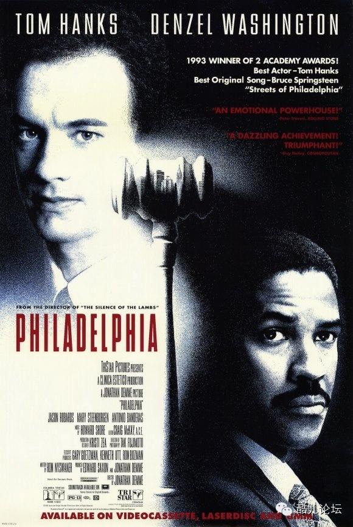
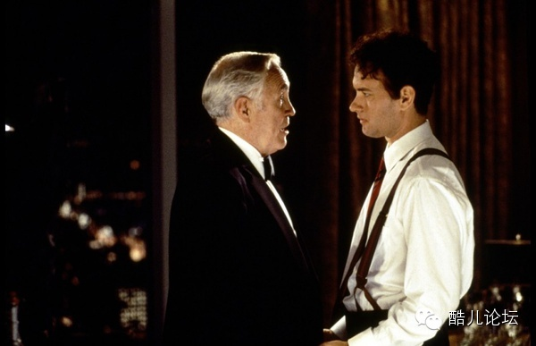
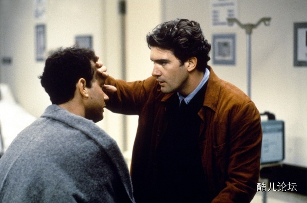

开始时间：
2014-12-14 14：00
地址：
望月冒刺活动中心
本期播放：
费城故事（1993）
本周是初来乍到的旸旸给大家放电影，居然是二十多年前的《费城故事Philadelphia》！话缩总觉得1993年只是十年前，我一定是个活在过去回忆中的男人。
这部《费城故事》讲述安德鲁（汤姆•汉克斯 Tom Hanks 饰）和米勒（丹泽尔•华盛顿 Denzel Washington 饰）认识于法庭上，两人都是年轻有为的律师，各为其主。然而，年轻的安德鲁不久后因为同性恋和身染艾滋病被老板发现，以莫须有理由解雇了。遭解雇后的安德鲁四处寻找律师为他讨回公道。当安德鲁找到米勒时，米勒一开始拒绝了他。因为米勒像普通人一样憎恨同性恋和惧怕艾滋病，但当他看到安德鲁在图书馆搜索“艾滋病歧视”时遭到管理员的白眼，听着妻子缓慢而平静地说出他们的姨妈、朋友有很多也是同性恋时，他决定受理安德鲁的案件。在最后的法庭上，病危的安德鲁毅然出庭……
海报

基本信息
导演: 乔纳森·戴米Jonathan Demme
编剧: 罗恩·内斯万尼尔 Ron Nyswaner
主演: 汤姆·汉克斯(Tom Hanks) ...... Andrew Beckett
丹泽尔·华盛顿(Denzel Washington) ...... Joe Miller
罗伯塔·马克斯韦尔(Roberta Maxwell) ...... Judge Tate
巴兹·基尔曼(Buzz Kilman) ...... Crutches
类型: 剧情 / 同性
制片国家/地区: 美国
语言: 英语
上映日期: 1993-12-22(美国)
片长: 125分钟
又名: 费城
剧情简介
安德鲁和乔是费城的两名年轻律师，他们工作努力，都有美好的前途。安德鲁是一名同性恋者，并且染上了艾滋病。他没有将这些告诉老板。就在他刚获提升不久，却因老板发现了秘密而以他丢失文件为由把他解雇了，安德鲁找到乔希望他接受这个案子。乔本来拒绝受理，但出于对安德鲁的同情以及对法律公平平等原则的追求下，最终答应出庭。
安德鲁的家人支持他走上法庭。开庭审理时，众多示威者聚集在法院门外，要求给同性恋者合法权益，不准歧视艾滋病人。但同时也有反对者大呼“肛交者没有人权”，拦截安德鲁质问。被告坚持不承认是因此原因解雇安德鲁的。安德鲁衰弱的身体已无法承受剧烈的抗艾滋病药物的静脉注射，他预感到自己快不行了。但他仍坚强地挺过了激烈的法庭答辩。
到了审判的日子，陪审团终于宣判原告安德鲁受到不公正解雇，被告应负责赔偿损失。安德鲁终于获胜了。乔奔赴医院将这一消息告诉了安德鲁和他的家人，但安德鲁却不能再支持下去了，他正在慢慢死去。
剧照


想要知道冒刺活动中心具体地址，请关注MOTSS官方微信“MOTSS2002”，回复“幸福在哪里”，即可获知（由于微信负责人平常也有事情，所以可能每天晚间统一回复）。
报名原帖
http://www.motss.info/forum.php?mod=viewthread&tid=27304&extra=page%3D1
报名也可以戳下方【阅读原文】喔~
↓